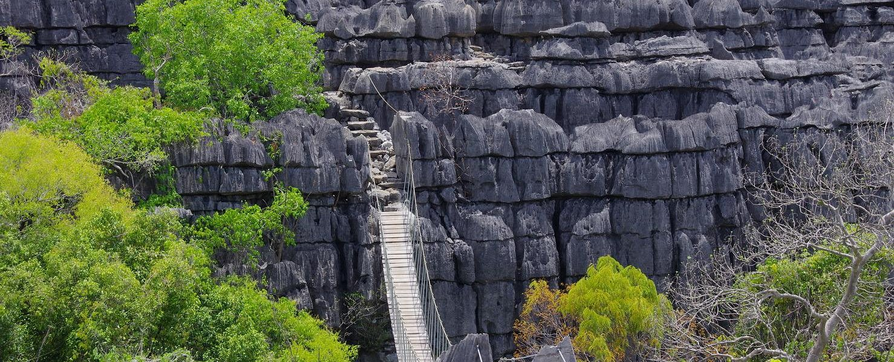

Les Forêts & Paysages
Des paysages naturels époustouflants à perte de vue
Avant, Madagascar était appelée l'île verte car elle était couverte d'une végétation flamboyante. Les montagnes qui traversent Diego Suarez, Ambilobe, Ambanja offrent des paysages naturels époustouflants. Les Tsingy rouges sont une formation géologique unique au monde.
Tsingy Rouge
Forêt dense
Randonnée
Photographie
Tsingy Rouge
Formation géologique unique de pinnacles rouges, résultat de millénaires d'érosion.
Routes panoramiques
Les routes vers Ambilobe et Ambanja traversent des paysages naturels d'une beauté rare.
Biodiversité
Lémuriens, caméléons, oiseaux endémiques — la forêt malgache est un trésor vivant.
